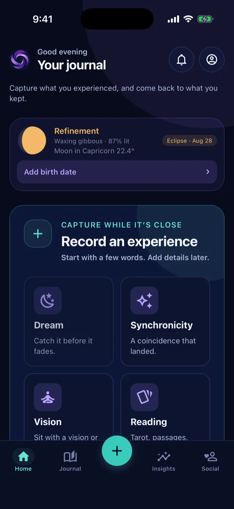
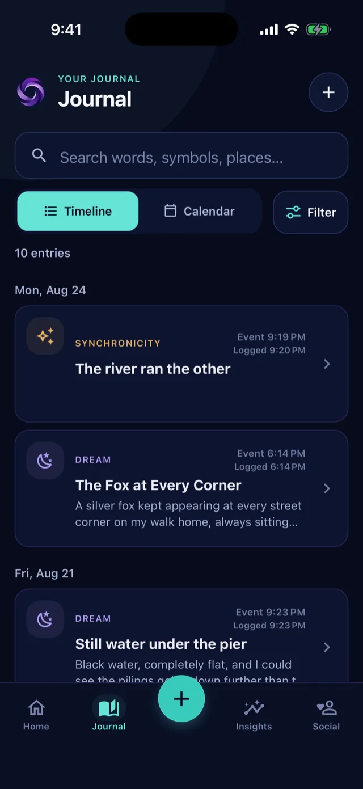
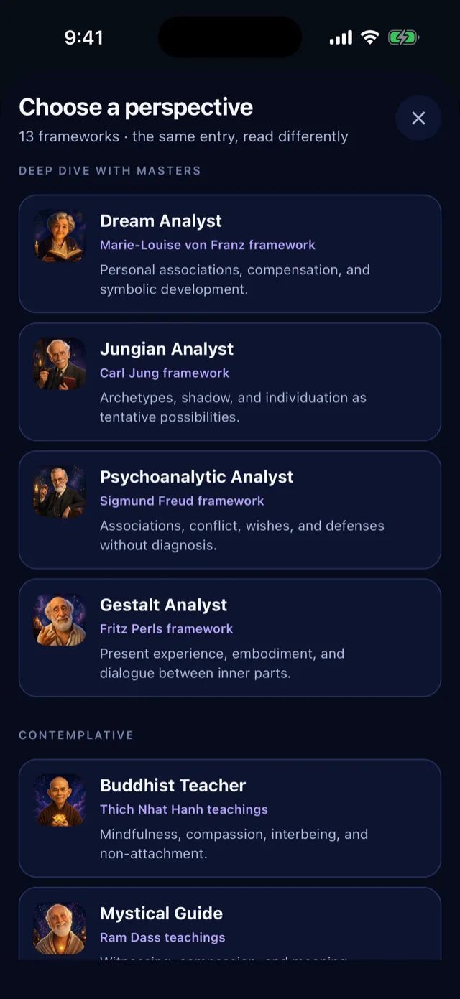
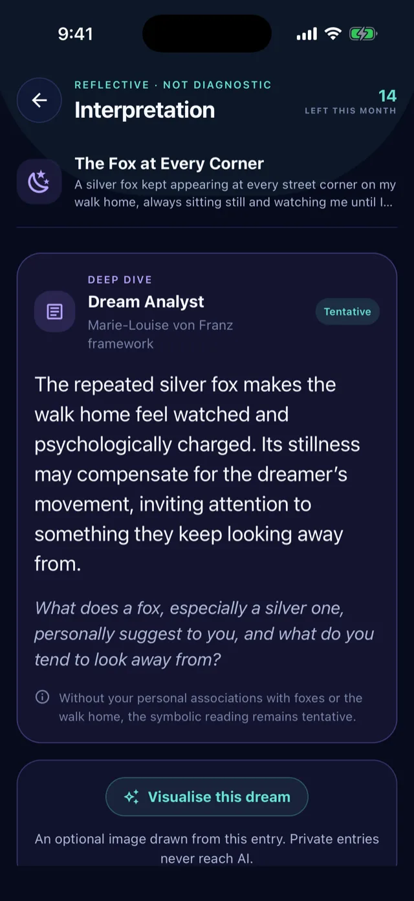
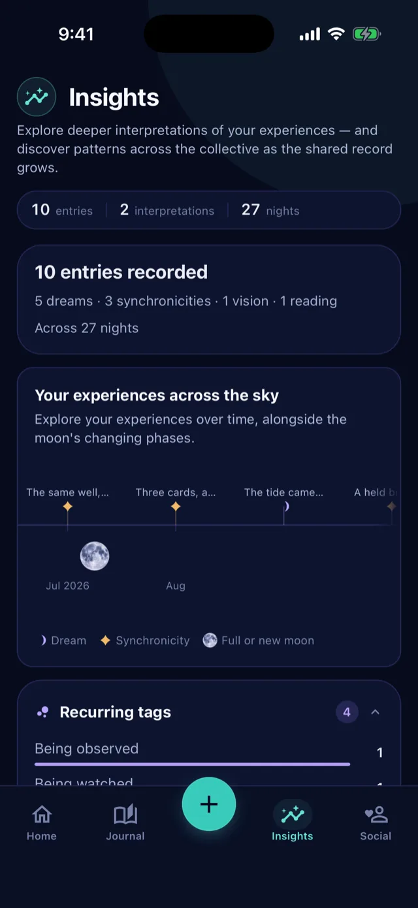
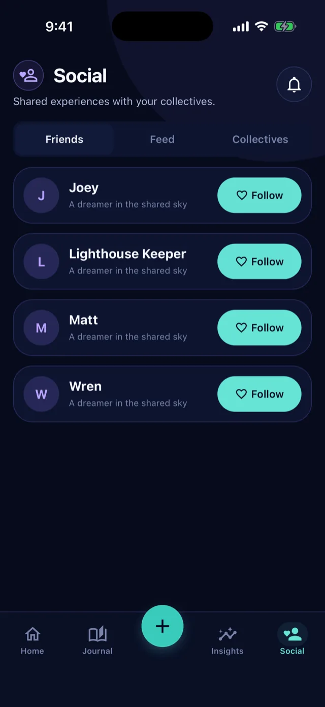

A stranger repeating a phrase from last night's dream.
A symbol that keeps appearing, again and again.
Some people ignore them.
Others take note.
01
Capture
Record it before the details fade.
02
Interpret
Explore what it could mean through different perspectives.
03
Share
Share your experiences and see what others are noticing.
04
Review
See what connected, what repeated — and what came true.

Everything in one place
Guidance is flowing every day.
Dreams.
Symbols.
Synchronicities.
Intuition.
Life is constantly offering moments of guidance.
Most are forgotten.
But the more you pay attention, the more is revealed.
What is Synchroneers?
Your Spiritual Navigation System.
A place to capture dreams, synchronicities and meaningful moments.
To connect the dots.
To better understand your inner world.
And explore alongside a community of fellow dreamers.
DreamSaved · 21:04
What do you remember? Start anywhere…
AnalyseShareKeep privateSave entry

Perspectives
One experience. Thirteen perspectives.
Start with a plain reading in your own words. Then explore the same experience
through different psychological, spiritual and contemplative perspectives.
Each perspective is clearly labelled, so you always know which lens you're using.


Analysis
Your patterns are trying to tell you something.
Hundreds of dreams. Thousands of details. One evolving intelligence map.
Synchroneers analyses the whole picture, so you can see patterns no single dream
could reveal on its own.
Pattern Researcher · your records only
17left this month
Water appears in six entries and is described as calm or slow in five of them.
Where it rises, the feeling you recorded is patience rather than fear.
Dream · 4 Aug
Dream · 11 Aug
Synchronicity · 12 Aug
Dream · 17 Aug
Vision · 19 Aug
Dream · 21 Aug

Insights · a pattern, not a verdict
Recurring
Waiting without arrival
Platforms, carriages and corridors recur, and in each of them the arrival never
quite happens. The waiting itself looks like the content rather than a delay
before something else.
7 entriesLast seen 2 days ago
Counterexample
One entry breaks the pattern, and it stays on the card rather than being quietly
dropped. A reading that only ever confirms itself is not worth keeping.
Dream · 9 Aug · water described as rising fast
The Skeptical Scientific perspective exists for the same reason. Sleep, memory,
emotion, coincidence, and base rates get a seat at the table.
Collectives
Dive into the Collective Unconscious.
See what other people are dreaming, noticing and experiencing — and discover
the themes beginning to emerge across the wider community.
Your entryYours alone, and unchanged by anything below it. Mark it private and it never
reaches AI either.
You confirm what leaves
A redacted postA separate record with its own permissions and its own delete.
Others read the post
The CollectiveNever gains access to the entry the post was made from. The link between the two
is kept where no device can read it.

Your Spiritual Navigation System
Your journey starts here.
Capture dreams and synchronicities.
Explore different perspectives.
Connect with fellow dreamers.
Build your own archive.
Everything together, whenever you need it.
Download Synchroneers for free today.
Start paying attention to the moments that matter.